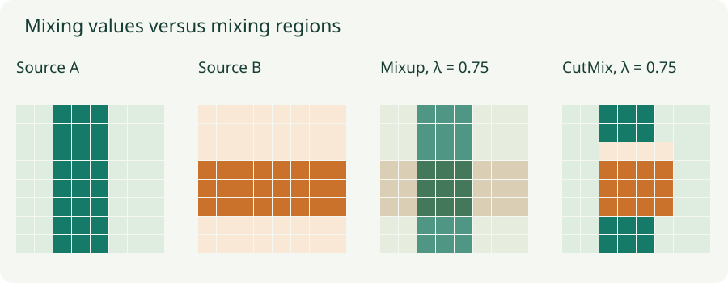

Data Augmentation, Mixup, and CutMix: Change the Training Distribution
Separate invariance from equivariance, derive Mixup’s linear cross-entropy identity, and calculate exact CutMix targets after boundary clipping.
Instead of adding a penalty to the weights, data augmentation regularizes the model by expanding the empirical training distribution with domain-valid transformations and convex combinations of examples.
1. Invariance vs. equivariance under transformations
Given a distribution of transformations $T\sim\mathcal T$, augmented training minimizes the expected loss across transformed views:
- Invariance ($T_y y_i = y_i$, so $f_\theta(Tx)\approx f_\theta(x)$): Used when the transformation preserves the global label—such as horizontal flips or color jitter in object classification.
- Equivariance ($T_y y_i = T y_i$, so $f_\theta(Tx)\approx T f_\theta(x)$): Required when targets carry spatial coordinates—such as segmentation masks, bounding boxes, or keypoints, which must be transformed alongside $x$.
2. Mixup: convex combinations of inputs and targets
Rather than transforming a single example, Mixup draws $\lambda\sim\operatorname{Beta}(\alpha,\alpha)$ on $[0,1]$ and forms a linear interpolation between two training pairs $(x_A,y_A)$ and $(x_B,y_B)$:
Because cross-entropy $\operatorname{CE}(y,p)=-\sum_k y_k\log p_k$ is linear in the target vector $y$, the loss on the mixed prediction $p=f_\theta(\tilde x)$ decomposes without constructing a dense one-hot tensor:
For $\lambda=0.7$ and predicted probabilities $(p_A,p_B)=(0.8,0.2)$ on $\tilde x$, the loss is $-0.7\log 0.8-0.3\log 0.2\approx 0.639$. Notice that $p=f_\theta(\tilde x)$ is evaluated once on the blended input $\tilde x$—forcing the model’s logits to transition linearly between classes rather than jumping across a sharp boundary.
3. CutMix: spatial patch replacement and clipped area weights
Blending two images at every pixel can wash out local textures. CutMix instead pastes a rectangular patch from $x_B$ into $x_A$ using a binary mask $M\in\{0,1\}^{H\times W}$ ($M_{uv}=1$ where $x_A$ is kept, $0$ inside the pasted box):
Given a target ratio $\lambda$, CutMix proposes box dimensions $r_w=\lfloor W\sqrt{1-\lambda}\rfloor$ and $r_h=\lfloor H\sqrt{1-\lambda}\rfloor$ around a uniform center $(c_x,c_y)$, then clips the box to $[0,W]\times[0,H]$. Because clipping near an image border shrinks the pasted rectangle, the target $\tilde y=\lambda_{\rm actual}y_A+(1-\lambda_{\rm actual})y_B$ must use the actual post-clipping pixel fraction $\lambda_{\rm actual}$:
- Centered $4\times 4$ box on an $8\times 8$ image: Replaces $16/64$ pixels, so $\lambda_{\rm actual}=1-16/64=0.75$ and $\tilde y=(0.75,0.25)$.
- Clipped at the left edge ($c_x=0$): Only a $2\times 4=8$-pixel strip falls inside the image, so $\lambda_{\rm actual}=1-8/64=0.875$ and $\tilde y=(0.875,0.125)$.

4. Lab: compare Mixup and CutMix with boundary clipping
Pixels, clipped area, and soft targets
Choose a requested A fraction. For CutMix, the square side is rounded from $8\sqrt{1-\lambda}$; its vertical center stays at 4. Move the horizontal center to clip the patch and observe the corrected label weight.
5. Implementation
# Batch Mixup / CutMix loss using cross-entropy linearity in the target
perm = torch.randperm(x.size(0), device=x.device)
mixed_x = lam * x + (1.0 - lam) * x[perm] # or patch replacement with lam = lam_actual
logits = model(mixed_x)
loss = lam * F.cross_entropy(logits, y) + (1.0 - lam) * F.cross_entropy(logits, y[perm])6. Questions worth answering
Cutout replaces the rectangular patch with zeros or noise while keeping the single hard label $y_A$. CutMix fills the patch with real pixels from another training image $x_B$ and interpolates the target $\lambda_{\rm actual}y_A+(1-\lambda_{\rm actual})y_B$.
When the sampled center $(c_x,c_y)$ lies near an image edge, clipping removes part of the $r_w\times r_h$ box. Using the unclipped $\lambda$ would supervise the network with a larger weight on class B than the fraction of B pixels actually present.
Sources
Zhang et al., mixup: Beyond Empirical Risk Minimization; Yun et al., CutMix: Regularization Strategy to Train Strong Classifiers with Localizable Features.